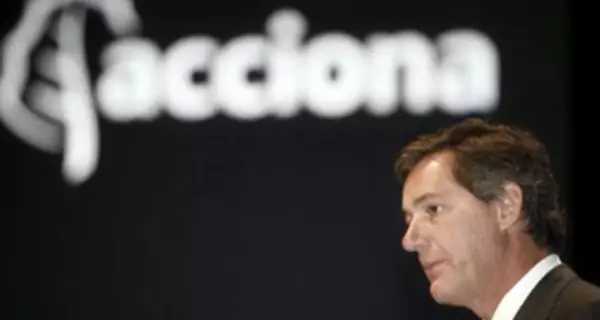

|  | Acciona es la empresa matriz de un grupo empresarial español del sector de la construcción e infraestructuras resultante de la fusión en 1997 de Cubiertas y Mzov con Entrecanales y Távora. Líder en la promoción y gestión de infraestructuras, energías renovables, agua y servicios, tiene más de 30.000 empleados y presencia en más de 30 países de los cinco continentes. José Manuel Entrecanales es su presidente, mientras que Juan Ignacio Entrecanales ocupa la Vicepresidencia. Read More |